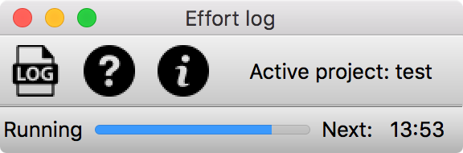

3.1 Elements of the main window
The main window in EffortLog consists of various elements which described in detail below. Its main purpose is to maintain a simple interface to provide the user about the current project he or she is logging to and when the next scheduled logging event will be. Except of the menubar and the toolbar, there are no elements which need user interaction. The main window looks like the following image.

Menubar
A simple menubar provides the user with information about the program
File
- Read current log file
- Opens the current log file for quickly reading through it.
Help
- About
- Display information about EffortLog including the version and author of the program.
- Help
- Open the help window displaying the contents of the EffortLog help.
A simple toolbar provides quick access to to functions of the menubar and information about the currently active project.
Statusbar
A statusbar in the lower part of the main window provides the user with information about the running program. The statusbar displays a message with the following information:
- Indicator if the program is running.
- A timer in form of a progress bar until the next event.
- The time of the next scheduled logging event.
This message can be overwritten by tooltips when hovering with the mouse pointer over a button.